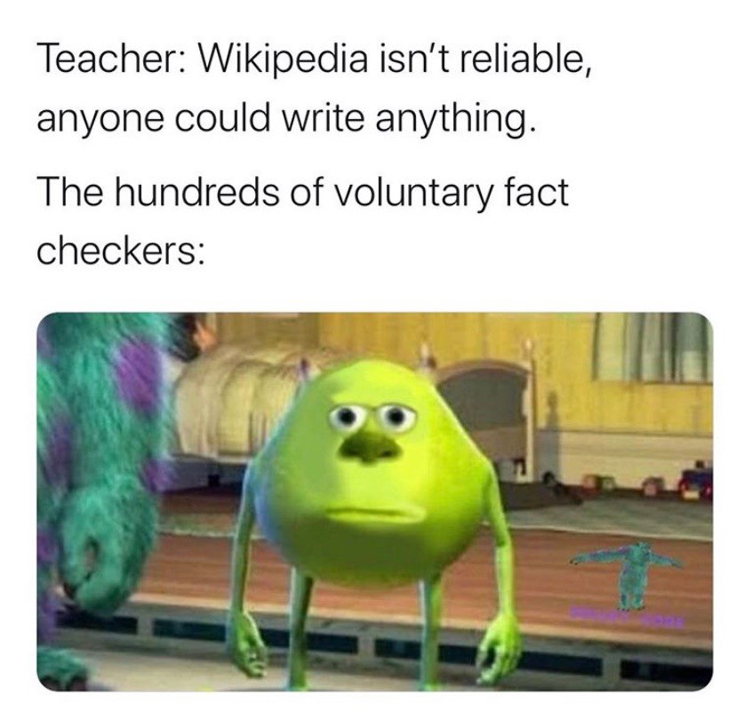
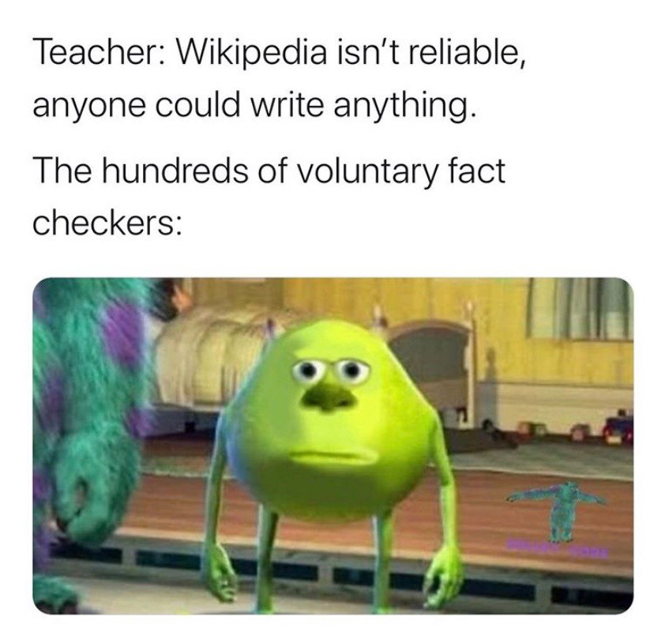

Michelle Tran
I have experience in business marketing and trades. As an business owner of an online sticker shop, I manually prepare orders in the following sequence: draw the characters or designs using a smart tablet, color and size the stickers according to what seems like a perfect size that appeals to the customers (nothing too humongous and nothing too miniscule), trace the stickers in a white layer in a way that would allow the paper cutter machine -- known as a Cricut machine -- print the stickers on a sticker sheet to place them into the Cricut machine, and put the set of stickers into a package to send out. I created multiple social media accounts on a variety of platforms to market my store, which was promoted to a wide audience who enjoy cute designs. I eventually earned enough to purchase other equipment, such as business cards, envelopes, and better-quality plastic packages to display the stickers in. As a business owner with no previous experience in the field of entrepreneurship, I was able to spread awareness of this shop through connections with friends who have many acquaintances and family members. I have hired a few people because of the skyrocket of sales that have occurred, and I have encouraged the team of employees to coordinate some strategies to further advertise the product as best as possible. Leadership skills can be honed at any level. We agree that each individual is their own leader; showing up on time to meetings or showing dependability in the workplace are the types of leadership that we expect to be acquired.
As someone with experience with leadership roles, I have been able to lead my team that gravitates towards success. It takes a lot of motivation to participate in a small business, especially if it is a career that they do not want to be part of in the long run. I always advocate for teamwork and sportsmanship among the time we spend together for this business. Many instances, however, that led me to providing leadership was group work in school. I have little to no experience in the workfield, but one thing is certain -- I know how to provide leadership and ideas to my group in order for our work to progress. It is often the case when groups scatter the work and so not commit to the work right away. The problem that I have identified is that the motivation is lacking, and the students in the group do not find interest in the subject. Instead of forcing them into the work, which is an inefficient method, I would provide ideas and make the subject sound appealing to work on.
I have applied this knowledge of leadership to my business and made it easier for my employees to care about their job. Because this is a small business, I have the roles alternate between days because it would not make their job boring. Rather than having one person make visits to the mailbox so often and have another worker package the orders, they alternate roles and enjoy the variety. I have learned that this is one of the most effective ways to get the orders successfully sent and delivered to the customer.
Experience
Innovator
• Sold products on Amazon
• Hundreds, nearing thousands, of 5 star reviews
• Experience with marketing and social media
Varsity Captain
• Responsible for hyping up the team
• Provided enthusiasm and sportsmanship
Secretary of School Show Choir
• Took notes whenever the president or vice president spoke
• Kept the notes organized and intact
• Created educational content to help promote improvements on hand gestures and singing techniques
• Assisted the president or vice president whenever they needed it
Education
UC Riverside
Mark Keppel High School
University of California Riverside
Portfolio


